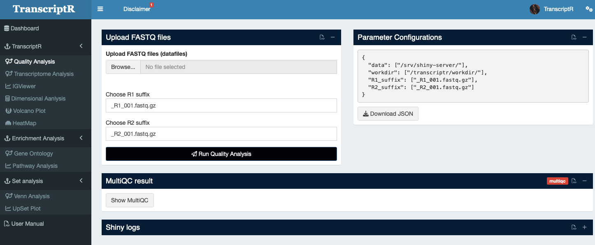
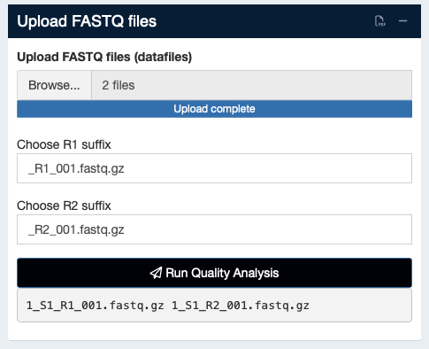
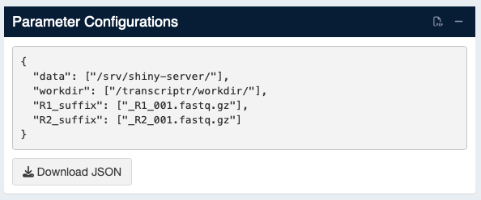
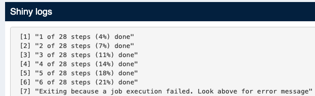
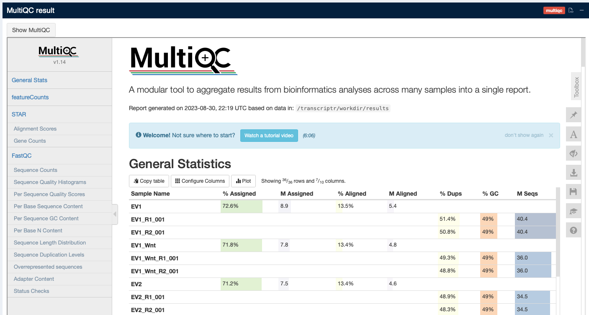

1 Quality Analysis
PLEASE NOTE WE INCLUDED THE POSSIBILITY OF THE HUMAN TRANSCRIPTOME DATA ANALYSIS FROM THE SEQUENCE DATA. NONE OF THE OWNER OF THE CODE OR DATA CENTER IS RESPONSIBLE FOR HANDLING THE HUMAN DATA. IT IS UPTO THE USER IF THEY WANT TO USE THE ONLINE VERSION FOR HUMAN DATA ANALYSIS.
The Quality Analysis is the first section in transcriptR. It allows the user to asses for the quality of the RNA-seq experiment. For convenience, you can run the quality analysis without needing to run the whole RNA-seq pipeline (look at the “Transcriptome Analysis section”). The quality assessment will run FastQC and MultiQC in background and the user will get a complete MultiQC analysis report in html format. You can skip the quality analysis and run the main pipeline directly, transcriptR will perform the quality assessment at the beginning of the analysis.

1.1 How to use
Details are provided below -
1.1.1 Data upload
The current version can handle the upload of single fastq files. You can select all of the fastq. User can browse through the folder to upload data or drag & drop files directly.
Please note it will take some time to upload the data and once the data uploaded, the list will be displayed in the browser (see Figure 1.2)

1.2 Parameters configurations
We provided the JSON file (see Figure 1.3) to the user if they want to use the transcriptr snakemake pipeline by their own. Please download a copy of your JSON file.

1.3 Run and Visualization
1.3.1 Run Quality Analysis
Once all fastq (fastq.gz files only!) files are uploaded on the browser, please check the names and click ‘Run Quality Analysis’ to submit the job.
Please remember, the fastqc will use 12 cores in the background to estimate the quality of the data. Make sure the computer has at least 16 cores.
1.3.2 Visualization
1.3.2.1 Run logs
We provided ‘shiny logs’ box Figure 1.4 to show the user the background run. It might be possible after submitting the job, the browser hangs and cannot be reloaded. Please wait till the background job finished. The sucess/failure in the run will appear in the ‘shiny logs’ box.

1.3.2.2 Result - MultiQC
Once the run sucessfully finished, the user can view the MultiQC result in the MultiQC result box. Please click to ‘show MultiQC’.

If MultiQC result box cannot display any result (see Figure 1.5), please reload the browser and check again. Make sure all jobs finished successfully.
Check the github repository for sample data file. You may download the Sample_sheet.csv file and use as a template for your sample_sheet.
Copyright © 2023-2024. Massimiliano Volpe and Jyotirmoy Das.